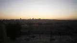
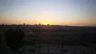
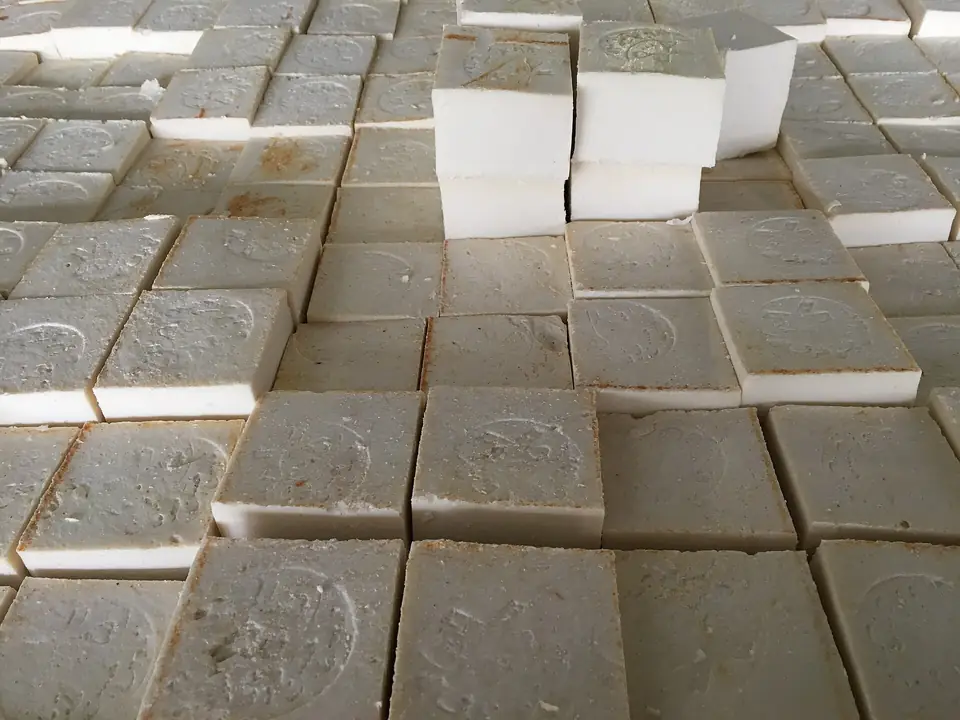
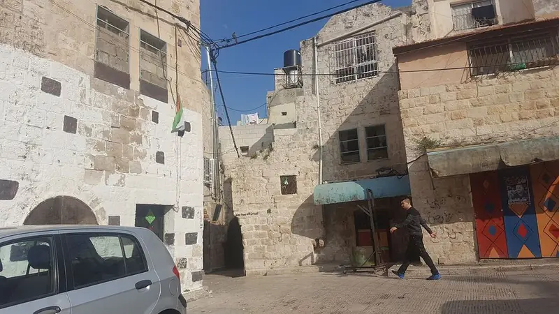
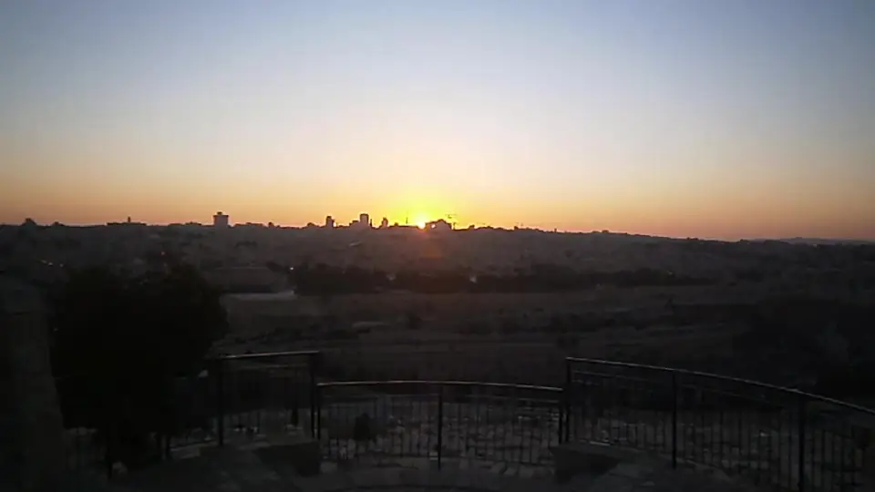
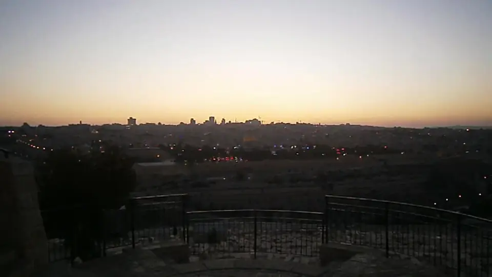
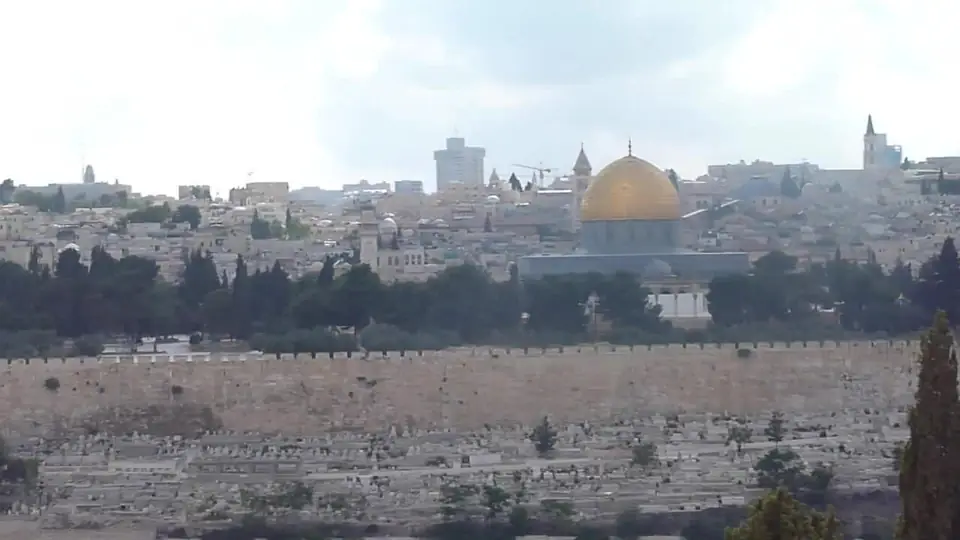

November 2022
NablusFrom the archive
A walk through Nablus’s old city
Shoppers under the bunting, a café oven and the arches of the old city, filmed during a walking tour in January 2016.
Archive footage. Every video says where and when it was filmed, and who filmed it. Our standards
Chapters
About this video
Filmed during a walking tour of the old city of Nablus, this short clip follows a stone lane past shoppers and shopfronts, stops at the Tarabeesh coffee shop and restaurant, where a wood fire burns in the oven, and passes under arched passages strung with bunting.
The video was published on Wikimedia Commons under a Creative Commons licence, and is shown here in full. [Context from the reporting: what has changed in the old city since the video was filmed.]
Read the transcript
[Transcript: what is said in the video, transcribed and translated by the video desk, with each speaker named.]
[Sounds that matter to the story are described in brackets, as they are in the captions.]
Up next
December 2014
The same view, three winters later

August 2011
Sunset over the Old City

More from Nablus
Read next

Explained
Nabulsi soap, explained: olive oil, time and a city’s craft
How the soap is made, why it cures for weeks, and where it is sold.

West BankFeature
In Nablus, the olive harvest begins before dawn
For families who have tended the same groves for generations, October means early starts and shared work.

Analysis
Nablus’s old city, read through its soap factories
[Analysis excerpt: what the soap factories say about the city, in two lines.]
One view of Jerusalem
Series
The Old City from the Mount of Olives: four clips by three film-makers, the earliest from 2011.
-

August 2011
Sunset over the Old City
-

December 2014
The same view, three winters later
-
November 2022
Dusk, and the lights come on
-

Date not recorded
The Old City by day, from Dominus Flevit